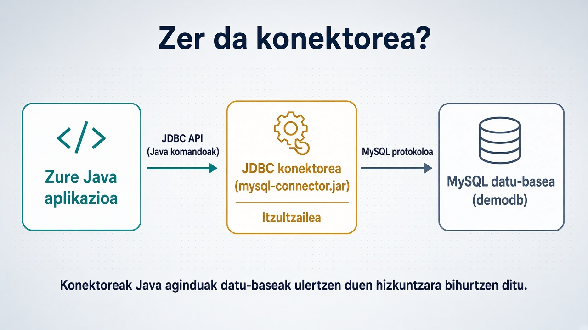

1. Ideia
Zer den JDBC konektorea eta zergatik dagoen aplikazioaren eta datu-basearen artean.
Garapen Inguruneak · JDBC
Gaur: zergatik behar dugun konektorea, nola konektatzen garen MySQL-ra, eta nola irakurri/idatzi demodb datu-basean Java-tik.
Helburua
Zer den JDBC konektorea eta zergatik dagoen aplikazioaren eta datu-basearen artean.
MySQL (Docker), demodb.sql eta JAR-a proiektuan jartzea — bakoitzaren zergatia.
SELECT → UPDATE (Statement) → PreparedStatement → transakzioak.
Zergatik orden honetan?Lehenik ulertu komunikazioa; gero irakurri; gero idatzi; azkenik idazketa seguruagoa eta kontrolatua.
Arazoa
Zure programak objektuak eta metodoak erabiltzen ditu. MySQL-k SQL eta bere protokoloa ulertzen du. Bi mundu horiek ez dira berdinak.
Nola esango dio Java aplikazio batek datu-baseari: “Ekarri DEPT taulako sailak”?
Definizioa
Konektorea (driver) zure aplikazioaren eta DBKSaren arteko zubia da. JDBC API-ko komandoak hartu eta datu-basearen protokolo natibora bihurtzen ditu.
Zertarako erabiliko dugu?Java-tik demodb irakurri eta aldatzeko: sailak zerrendatu, izenak eguneratu, erroreetan atzera egin.

Arkitektura
MySQL-ren “hizkuntza” ez dator Javarekin. JAR-ak gehitu behar dugu classpath-ean.
Non dago zerbitzaria, zein portu, zein datu-base: jdbc:mysql://localhost:3306/demodb
MySQL instalazio berdina denentzat, azkar eta garbia. Portua mapeatzen dugu kanpotik sartzeko.
Prestaketa · 0
GogoratuHost 127.0.0.1 · Portua 3306 (edo zure hostPort) · Erabiltzailea root · Datu-basea demodb
1. urratsa
DriverManager.getConnection(...) deitzen duzunean, JDBC-k driver egokia bilatzen du URL-aren arabera eta Connection objektua itzultzen du.
Zergatik lehenengo hau?Konexiorik gabe ezin da SQL bidali. Ariketa guztiak Connection horretatik abiatzen dira.
// JDBC URL: protokoloa + host + portua + DB String url = "jdbc:mysql://localhost:3306/demodb"; String user = "root"; String pass = "2paag3"; try (Connection con = DriverManager.getConnection(url, user, pass)) { System.out.println("Konektatuta!"); }
Tresnak
SQL kate osoa bidaltzen duzu. Sinplea. Ariketan 1 eta 2rako.
executeQuery → SELECTexecuteUpdate → INSERT/UPDATE/DELETESQL txantiloi bat ? parametroekin. Ariketa 3 (eta 4).
Zergatik biak ikasi?Lehenik Statement-ekin mekanika ulertu; gero PreparedStatement-ekin ohitura ona finkatu. Produkzioan PreparedStatement nahiago.
Ariketa 1
Helburua: sail bakoitzaren zenbakia eta izena pantailaratu.
con.createStatement()Zergatik SELECT lehenik?Idatzi aurretik irakurri: datuak daudela ikusi, URL/JAR/taulak ondo daudela frogatu.
Statement st = con.createStatement(); ResultSet rs = st.executeQuery( "SELECT DEPTNO, DNAME FROM DEPT" ); while (rs.next()) { int no = rs.getInt("DEPTNO"); String iz = rs.getString("DNAME"); System.out.println(no + " - " + iz); }
Ariketa 2
main-eko bi parametro: sail-zenbakia eta izen berria. Oraingoz Statement soilik (ez PreparedStatement).
java AldatuSaila 30 Logistika
args[0] = 30 · args[1] = Logistika
Zergatik executeUpdate?UPDATE batean ez dugu taularik itzultzen; eraginiko errenkada-kopurua itzultzen du. Hori inprimatu behar da.
int deptno = Integer.parseInt(args[0]); String izena = args[1]; String sql = "UPDATE DEPT SET DNAME='" + izena + "' WHERE DEPTNO=" + deptno; int n = st.executeUpdate(sql); System.out.println("Aldatuta: " + n);
SQL kateatzeak arriskutsua da (SQL injection) eta zikina. Hurrengo pausoak hori zuzentzen du.
Ariketa 3
SQL finkoa idazten duzu; balioak gero setXxx bidez sartzen dira. Konektoreak balioak segurtasunez bidaltzen ditu.
SQL + aldagaiak kateatu
? + setString / setInt
Zergatik hau ikasi?Parametroak bereizteak kodea argitzen du eta injekzioa saihesten du. Ohitura ona da lehen egunetik.
String sql = "UPDATE DEPT SET DNAME=? WHERE DEPTNO=?"; PreparedStatement ps = con.prepareStatement(sql); ps.setString(1, izena); // 1. ? ps.setInt(2, deptno); // 2. ? int n = ps.executeUpdate(); System.out.println("Aldatuta: " + n);
Ariketa 4
Defektuz autocommit piztuta dago: sententzia bakoitza berehala gordetzen da. Multzokatu nahi badugu, itzali.
Zergatik behar dugu?Eguneraketa bat baino gehiago elkarren menpekoak direnean (adib. eskaera + lerroak): erdi-eginda uztea okerragoa da ezer ez egitea baino.
con.setAutoCommit(false); try { ps.executeUpdate(); // beste sententziak... con.commit(); } catch (SQLException e) { con.rollback(); throw e; } finally { con.setAutoCommit(true); }
Eskema
DEPTNO PKDNAME izenaLOC kokapenaGaurko ariketak hemen zentratzen dira.
EMPNO PKENAME, JOB, SAL…DEPTNO FK → DEPTSaila ezabatu/aldatzean FK kontuan hartu.
Zergatik eskema hau?Adibide klasikoa eta txikia da: SELECT eta UPDATE erraz frogatzeko, baina erlazio erreal batekin.
Klasean
Laburpena
Java ↔ MySQL zubia. JAR gabe ez dago komunikaziorik.
Atea. Hortik sortzen dira Statement / PreparedStatement.
SELECT → ResultSet. UPDATE → eraginiko kopurua.
Parametroak ?-rekin: seguruagoa eta argiagoa.
commit = gorde guztia. rollback = ezer ez.
Pool-ak eta prozedurak gerorako. Gaur oinarria menderatu.
Hurrengoa
Ireki proiektua, JAR gehitu, konektatu demodb-ra eta hasi 1. ariketa: sailak pantailaratu. Blokeatzen bazarete: URL, portua, pasahitza edo JAR falta ohi da.